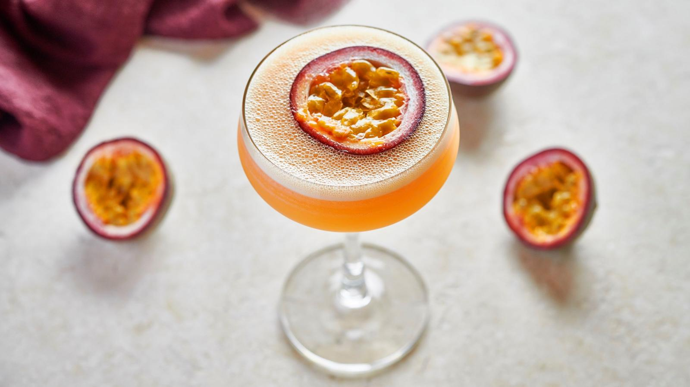

Martini
Lets make a martini

The sweet and sour combination of vanilla vodka, passion fruit liqueur,
freshly squeezed lime juice and a simple vanilla syrup makes this party classic
unique and delicious.
You will need
For the syrup
- 100G caster sugar
- 50ml oz water
- 10ml vanilla extract
For the cocktail
- 2 handfuls ice
- 2 passion fruit
- 50ml vanilla vodka
- 15ml passionfruit liqueur
- 15ml lime juice
- 50ml prosecco
Method
- For the vanilla syrup, put the caster sugar in a small non-stick saucepan over
a medium heat then pour in the water and vanilla extract. Stir and bring to the
boil. CAUTION: boiling sugar is extremely hot. Handle very carefully. Use a deep
pan to avoid bubbling over.
- Once the sugar has dissolved and the liquid is clear, take the pan off the heat
and leave to cool. Put a coupette or other glass of your choice into the freezer.
- Fill a cocktail shaker with ice. Halve the passionfruit, scoop out the insides
of one and a half and add them to the shaker. Pour 10ml/2 teaspoons of the cooled
vanilla syrup over the ice along with the vodka, liqueur and lime juice. Shake
vigorously for 8-10 seconds.
- Strain the mixture into the chilled coupette using a hawthorne cocktail strainer
and a fine mesh strainer. If you don’t have a strainer, any kitchen sieve will
work just as well.
- Float the remaining passionfruit half on top of the drink and serve the Prosecco
on the side. We recommend pouring the Prosecco into the passionfruit martini once
served!